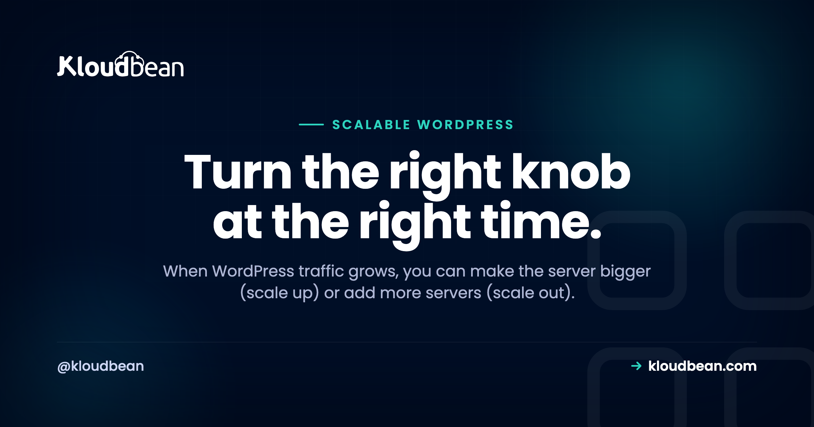
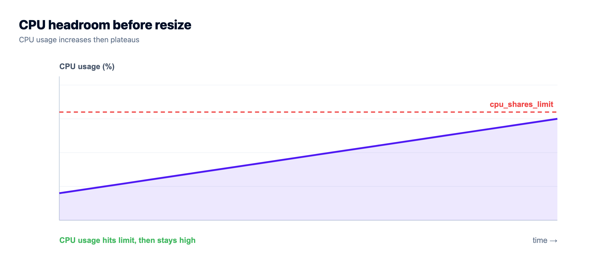
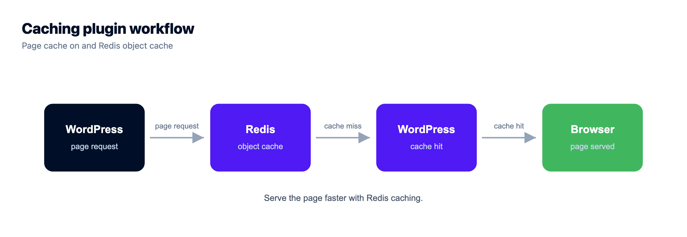
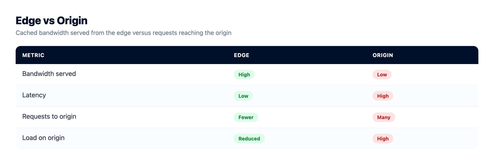
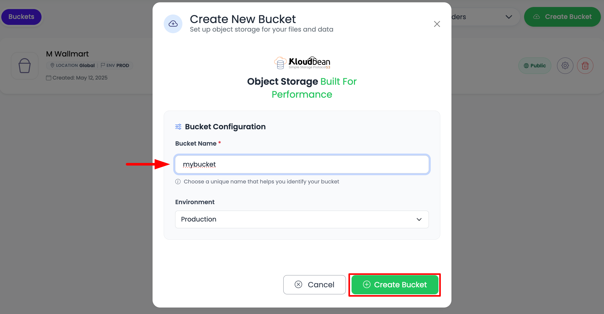

Scalable WordPress Hosting: The Rungs to Climb, In Order

The campaign goes live at 9am. By 9:20 the site is crawling, and by 9:40 someone's staring at "error establishing a database connection." First instinct? Buy a bigger server. Usually the wrong move. Scalable WordPress hosting isn't one purchase, it's a ladder you climb in order, and the cheapest rungs fix most problems.
I'll walk the whole ladder, rung by rung, and tell you which rung you're probably on. Skip ahead and you'll overspend on hardware to paper over a config gap. Climb in order and "high traffic" stops being scary.
Scale WordPress in this order: right-size the server, turn on page and object caching (managed Redis), tune PHP and the database, put a CDN or edge cache in front, offload media to object storage, then scale out with a load balancer across app nodes, with read replicas as the next database step. Autoscaling isn't a default toggle; it's an enterprise or custom setup. Most sites that feel slow need caching and right-sizing, not a bigger architecture.
Most "slow" WordPress isn't short on servers
Here's the position I'll defend for the rest of this piece: the majority of WordPress sites that fall over under load aren't underpowered. They're rebuilding every page from the database on every single visit because caching isn't set up. Throwing a bigger server at that buys you a little headroom and a bigger bill. It doesn't fix the actual problem.
So think of scaling as a ladder. Each rung is more effort and more capacity than the last, and you only climb to the next one when the current rung genuinely runs out. Cheap and simple first. Complex and powerful last.
Rung 1: Right-size the server first
Scaling up (vertical scaling) means giving your one server more CPU and RAM. Nothing about the architecture changes, you just resize. It's the simplest possible move and, for a lot of WordPress sites, the only one they ever need. A healthy, appropriately sized server running a well-tuned site handles a surprising amount.
The catch is a ceiling. You can only make a single box so big, and one box is a single point of failure: if it has a bad day, the whole site is down. So right-sizing is the correct first answer, right up until you hit that ceiling or you need the site to survive a server failure. Start here. Don't start bigger than here.

Rung 2: Turn on caching (this is the big one)
If you do one thing on this whole ladder, do this. A page cache serves ready-made HTML instead of rebuilding a page from PHP and the database on every hit, and it can multiply the traffic a single server handles by a large factor. An object cache (this is where managed Redis comes in) keeps the results of repeated database queries in memory, so WordPress stops asking the database the same thing over and over.
A site that's buckling under load is very often just uncached. Set up page and object caching before you spend a cent on more hardware. It's the cheapest and biggest win on the ladder, full stop. The guides on clearing the WordPress cache and managed Redis hosting cover the how.

Rung 3: Tune PHP and the database
Once caching is on, the next bottleneck is usually the dynamic work that can't be cached: logged-in traffic, the cart on a WooCommerce store, search. Two levers here. On the app side, give PHP enough workers to handle concurrent requests (too few and requests queue behind each other). On the data side, run WordPress on a properly sized managed database rather than sharing scraps with everything else on the box.
Slow queries are the usual culprit. Add indexes on the columns you filter on, and run EXPLAIN on anything sluggish. And that "error establishing a database connection" from the intro? Under load it usually means the database ran out of connections or capacity, not that your server is too small. The fix for that specific error is almost always the database tier, not the web tier.

Rung 4: Put a CDN or edge cache in front
Now push work off your server entirely. A CDN serves your static assets (images, CSS, JavaScript) from locations near your visitors, which cuts load and speeds up the world map at once. Take it further with a full-page edge cache and even the HTML gets served from the edge, so a big slice of traffic never touches your origin server at all.
On Kloudbean, Cloudflare (including Cloudflare Enterprise edge caching) is available as an add-on for any site, and it's included for Enterprise accounts. For a global audience or a landing page expecting a spike, this rung is often what keeps the origin quiet on the busy day.

Rung 5: Offload media to object storage
Big files don't belong on your app server's local disk. Every uploaded image, PDF, and video bloats the server, complicates backups, and quietly blocks you from the next rung. Move media to S3-compatible object storage (or managed Google Cloud Storage) and the server stays lean while files get served efficiently.
There's a second reason this rung matters, and it's the one people trip on: the moment you want more than one app server, media on local disk breaks. Node A has an image Node B has never heard of. Shared object storage is the fix, which is why it comes right before scaling out.

Rung 6: Scale out with a load balancer
This is the big architectural step, and you take it for one of two reasons: you've hit the ceiling of a single server, or you need the site to survive one server failing. Scaling out (horizontal scaling) means running multiple app nodes with a load balancer in front, spreading traffic across them. If one node goes unhealthy, the balancer routes around it and the site stays up.
WordPress needs two things prepared before this works cleanly, which is why they're earlier rungs: shared storage for uploads (that's the object storage from rung 5) and a shared object cache and session store (that's Redis from rung 2), so a visitor gets a consistent experience no matter which node serves them. Kloudbean's built-in Flexible Load Balancer is available on any account to enable when you reach this rung. It's off by default, so it's there waiting rather than in your way.

Rung 7: Scale the database with read replicas
Here's the trap that catches serious setups: adding ten app nodes doesn't scale your database. They all still hammer one database, and now it's the bottleneck. Scaling the web tier and scaling the data tier are different jobs.
For read-heavy sites, the general next step is read replicas: copies of the database that serve reads, so the primary is freed up for writes. That's a standard database scaling pattern rather than a one-click WordPress toggle, so treat it as an architecture decision and read up on how read replicas scale a database before you reach for it. Often, a well-sized managed database plus the object cache from rung 2 handles far more than people expect, and replicas only earn their keep at real scale.
What about autoscaling?
Fair question, because every platform advertises it. Straight answer: on Kloudbean, autoscaling isn't a default toggle you flip on your WordPress site. It's part of the enterprise path, alongside Kubernetes and custom architectures, handled as a custom setup. That's not a dodge, it's honest engineering. Most WordPress sites are served far better by the rungs above (caching, right-sizing, a CDN, a load balancer you scale deliberately) than by an autoscaling cluster they don't need and can't easily reason about. If you genuinely operate at that scale, the enterprise WordPress hosting path is where autoscaling lives.
The ladder as a cheat sheet
Same rungs, with the signal that tells you it's time to climb:
| Rung | What it fixes | Climb when |
|---|---|---|
| 1. Right-size | Baseline capacity | You're on a clearly undersized server |
| 2. Cache | Rebuilding pages on every hit | Almost always; do this first |
| 3. Tune PHP + DB | Slow dynamic requests, DB errors | Cached pages are fast but logged-in or cart is slow |
| 4. CDN / edge | Origin load, global latency | Global audience or a known spike coming |
| 5. Object storage | Bloated server, un-shareable media | Media is heavy, or you're about to add nodes |
| 6. Load balancer | Single-server ceiling and no redundancy | One server isn't enough, or you need uptime |
| 7. Read replicas | Read-heavy database bottleneck | The database is the limit at real scale |
How to know which rung you're on
Don't scale on a hunch. Scale on a signal. Watch response time creeping up as traffic rises, CPU or memory sitting near the ceiling during busy periods, database connection errors under load, or a crawl right when a campaign peaks. Those tell you which rung has run out. Scaling ahead of a known event like a launch or a sale is smart planning. Scaling because you're nervous usually just spends money early. And if you run many client sites rather than one busy one, the agency operations playbook is the companion to this piece.
The honest boundary
It's a Linux stack under all of it. The platform provides the levers (resize, managed database, caching, object storage, and the load balancer) and keeps them patched and healthy, while your site, your theme, your plugins, and your content stay yours. And the theme of the whole ladder bears repeating once: caching and a well-sized database matter more than raw server count for most sites. Scaling well is turning the right knob at the right time, and having those knobs there without building them yourself.
WordPress, without the server admin.
Run WordPress and WooCommerce on a managed server with a staging site, automatic backups, free auto-renewing SSL, and a managed MySQL or MariaDB beside it. Pick the cloud and the region yourself.
- ✓ Managed WordPress stack
- ✓ One-click staging
- ✓ Managed MySQL and MariaDB
- ✓ Automatic backups
- ✓ Free SSL
- ✓ Built-in load balancer
FAQ
What does scalable WordPress hosting mean?
It means hosting that handles traffic growth without slowing to a crawl or going down, by giving you the levers to climb a scaling ladder in order: right-sizing the server, page and object caching, PHP and database tuning, a CDN, media offload to object storage, and a load balancer across multiple nodes. A database that can scale to match completes the picture.
Why is my WordPress site slow under traffic?
Most often because it's rebuilding every page from PHP and the database on every visit, with no caching in the way. That's cheap to fix and doesn't need more hardware. Other common causes are an undersized database, too few PHP workers for concurrent requests, or heavy media served straight off the app server. Check caching first, always.
What's the cheapest way to make WordPress handle more traffic?
Caching, by a mile. A page cache serves ready-made HTML instead of rebuilding pages from the database, and an object cache in Redis keeps repeated queries off the database. Setting up page and object caching before buying more hardware is the biggest, cheapest scaling win there is. Most scaling problems are really missing caching.
Should I scale WordPress up or out?
Up first. Resizing to a bigger server is simple and enough for most sites. Scale out (multiple nodes behind a load balancer) when you hit the ceiling of a single server or you need redundancy so one server failing doesn't take the site down. They're stages on the same ladder, not rivals, and most sites scale up for a long time before ever scaling out.
Does adding more servers fix a slow WordPress database?
No. Scaling the web tier with more app nodes doesn't scale the database. If they all hit one overloaded database, it stays the bottleneck. Scaling seriously means giving the database its own sized managed instance, using an object cache to cut repeated queries, and adding read replicas for read-heavy load. The database is a separate rung from the web servers.
What do I need to run WordPress across multiple servers?
Three things: shared storage for uploads so media is consistent across nodes (object storage), a shared object cache and session store so a visitor's experience is the same on any node (Redis), and a load balancer to distribute traffic and route around unhealthy nodes. Get object storage and Redis in place before you add the second node.
Does Kloudbean autoscale WordPress automatically?
No, not as a default toggle. Autoscaling is part of the enterprise path, alongside Kubernetes and custom architectures, set up as a custom engagement. For the vast majority of sites, caching, right-sizing, a CDN, and a load balancer you scale deliberately are the better and more predictable answer than an autoscaling cluster.
How do I fix an error establishing a database connection under load?
Under load, that error usually means the database ran out of connections or capacity, not that the web server is too small. Move WordPress onto a properly sized managed database, add an object cache to reduce query volume, and check that connection limits and PHP workers are sane. It's a database-tier fix far more often than a web-tier one.
Do I need read replicas for WordPress?
Usually not until you're at real scale. Read replicas serve read queries so the primary database is freed for writes, which helps read-heavy sites. But a well-sized managed database plus a good object cache handles more than most people expect. Treat replicas as a deliberate architecture step for genuinely high read load, not a routine default.